<html>
<head>
<title>webnab Official Site</title>
<style type="text/css">
.head {
	font-size:1.1em
}
</style>
</head>
<body>
webnab 0.4a is released<br>
<a href="webnab-0.4.tar.gz">Download Here!</a><br>
<b>Minor bump! here is webnab 0.4a2, it works on 2.00+ with the new eloader and you can quit by pressing select!</b> (no changes on other firmware versions)<br>
<a href="webnab-0.4a2.zip">Download 0.4a2 Here!</a><br>

Changelog:
<pre>
Mini fix for PSPUpdates new theme, we now use their RSS feed instead of parsing the main site.
PSPUpdates and Slashdot are now stored in the feeds.txt instead of being hardcoded, so you can remove them or do whatever ;)
The monkey is back on the default skin :)</pre>
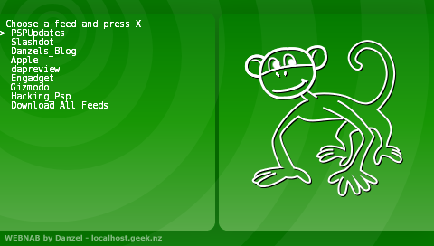 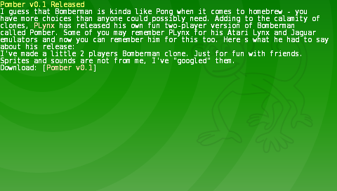<br><br>
Old versions:<br>
0.4<br>
<a href="webnab-0.4.tar.gz">Download Here!</a><br>
<a href="monkey4.tar.gz">Monkey Skin</a><br>
Changelog:
<pre>
Font rendering now done with freetype, you should be able to replace the included font file with another named the same.
Fixed up rss feeds that put the data in a <content:encoded> block (like wordpress blogs)
When there is no items in a new feed, don't leave the psp in a state where it can crash.
Fix rendering of news items with long titles.
Give news items an additional line to use.
You can now abort downloading a feed by pressing square and triangle.
When downloading we now report the size downloaded instead of printing dots.</pre>
Pics:<br>
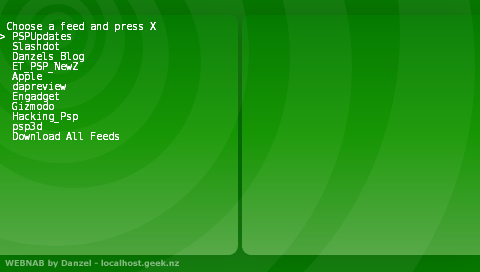 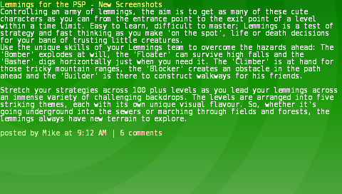<br><br>
old pics:<br>
0.3<br>
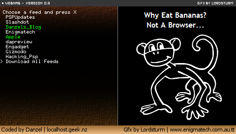 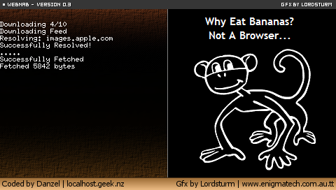<br><br>
0.2<br>
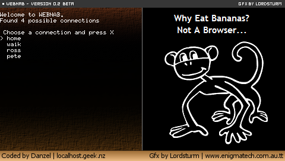 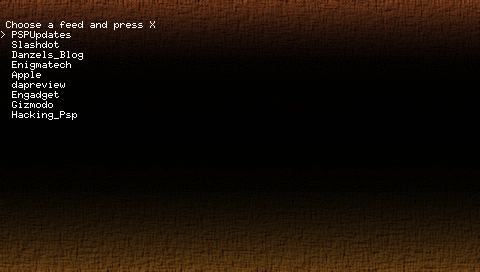<br><br>
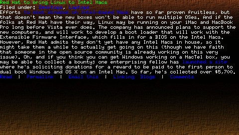 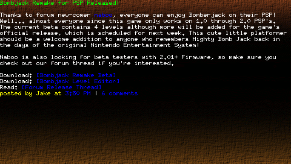<br><br>
<br>
<br><br>
w00tage, webnab 0.2a is here<br>
Changelog:<br>
<pre>Fixed to work on 2.00
Adding in some more character escapes
Fixed pspupdates rendering (Damn there was alot of broken html on there today :P)</pre>
<a href="webnab-0.2a.tar.gz">Download Here!</a><br>
Webnab is an RSS/Atom feed reader for psp, not yet as featurefull as the 2.6 one, but you know its better because it runs on 1.50 and 2.00 ;)<br>
you can customize the backgrounds if you want, change the feeds in the feeds.txt.<br><br>
Old Versions:<br>
<a href="webnab-0.2.tar.gz">Download 0.2</a><br>
<a href="webnab-0.1.tar.gz">Download 0.1</a><br>
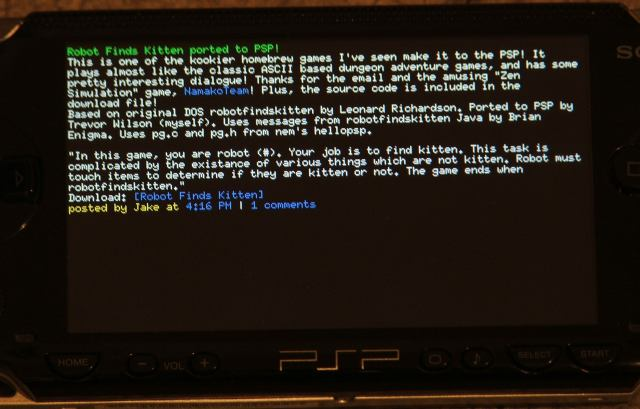
</body>
</html>